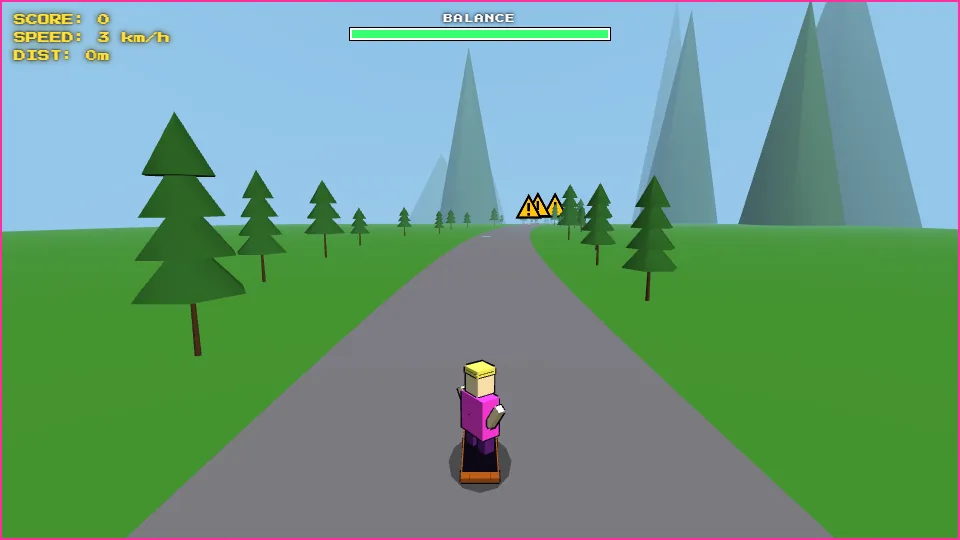
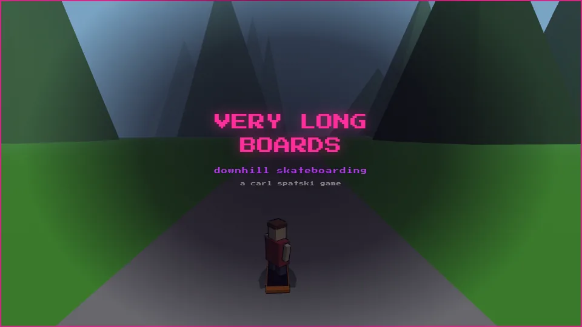
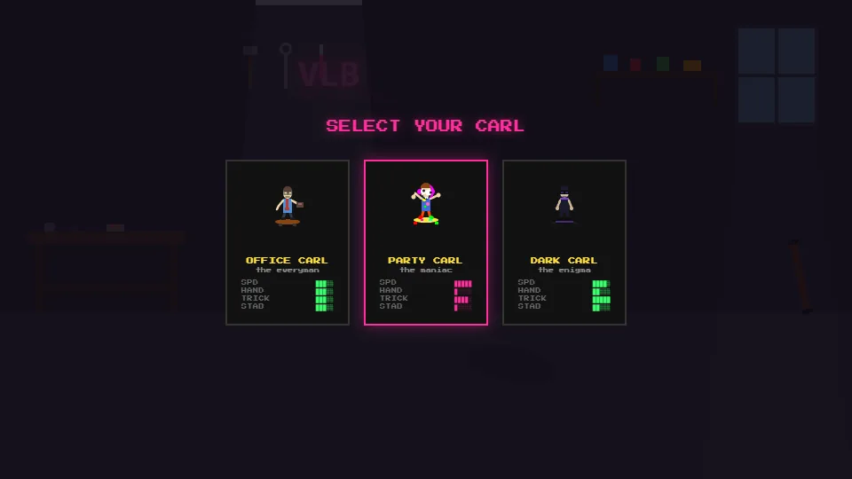

downhill longboarding · choose your carl · dodge everything
Downhill skateboarding as Carl Spatski, in one of three looks: the everyman, the maniac or the enigma, each riding differently.
In the browser it is an endless run: steer around obstacles, pull tricks for points and keep your stability up. The desktop version is a different, calmer game: timed runs down measured New Hampshire and Block Island roads.


game by magmacrunch media